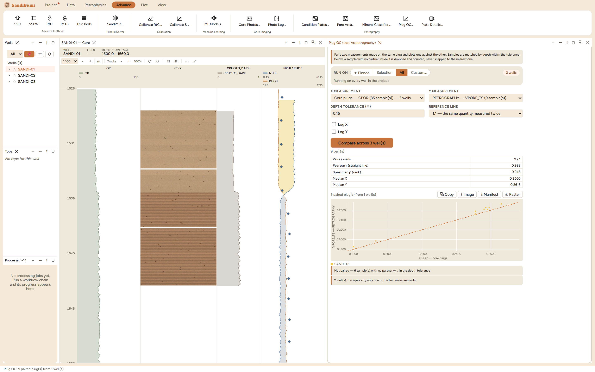

Plug QC plots two measurements made on the same plug against each
other: a petrography fraction against helium porosity, a classifier
fraction against XRD, a pore diameter against the pore-throat radius read
off the plug's own capillary-pressure curve. The petrography numbers are
the first measurements this application produces that nothing else in it
can check, since an area fraction estimating a volume fraction is a
claim, and this pane is where that claim meets an independent
instrument. Reach for it after every petrography run, before anything is
quoted.
The pane

Thin-section pore area against core plug porosity on the
example well: 9 pairs inside the 0.15 m tolerance, Pearson 0.998,
Spearman 0.946, medians 0.2560 against 0.2616, with 6 plugs that
have no section near them dropped and counted, never snapped.
A pair is two measurements of the same plug. Samples match
by depth within the tolerance; a sample with no partner inside it is
dropped and counted. Pairing is greedy on the closest pair and each
measurement is used once, so two sections cut close together cannot
both claim the same plug and tighten the correlation for free.
The reference line is a statement. "1:1 – the same
quantity measured twice" for porosity against porosity; "None
– two different quantities" for a pore body against a pore
throat, where every point below a 1:1 line would read as
disagreement when it is the physics.
Both correlations, on purpose. Pearson asks "is this a
straight line"; Spearman asks only "do they move together", survives
a log axis unchanged, and is the one to trust across quantities
measured in different units.
Step by step
Open Advance ▸ Petrography ▸ Plug QC…
(or from the workspace ＋ menu), pick the X and Y
measurements, and set the tolerance to what the sampling justifies,
0.15 m here, plug spacing being about two metres.
Choose the reference line to match the question, then
Compare.
Read the counts first (pairs, wells, unpaired), then the two
coefficients, then the medians.
Reading the result
The example closes the loop this book's petrography chapters opened:
the pore-area fractions measured from the plates agree with the plugs
they were cut beside at rank 0.946 over 9 pairs, with medians close
enough (0.2560 against 0.2616) to say no unit slipped anywhere between
import and measurement. The medians are the unit check by design.
Nothing here converts anything, so a fraction plotted against a
delivery stored in percent shows up as a 0.26 beside a 26, visible at a
glance instead of hidden inside a coefficient that does not care. The
pane also names what it could not use: 6 plugs had no section within the
tolerance, and two wells carry only one of the two measurements.
QC and pitfalls
Never widen the tolerance to win more points. A core off by
a whole sample interval passes any tolerance check; loosening it
quietly pairs each section with its neighbour's plug and returns a
confident number about the wrong rock. An empty result points at
Register Core Depth, not at a bigger number.
A curved but monotone relation is rank agreement, not a
line. Bodies against throats should show high Spearman and
unremarkable Pearson; reading the Pearson as failure there is
reading the wrong statistic.
Blank statistics are explained, not broken. Fewer than four
pairs leaves both coefficients empty with the reason stated, because
a correlation from three points is a number about nothing.